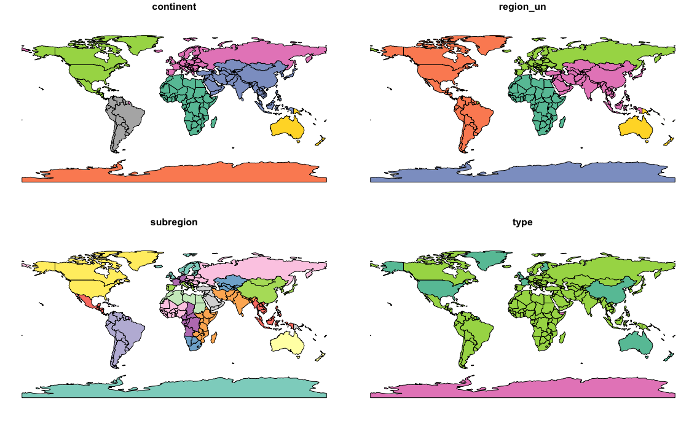

Chapter 2 Geograpic data in R
공간정보분석 2장 코드
sf: 지리 공간 벡터 데이터(vector data) 분석을 위한 패키지raster: 지리 공간 레스터 데이터(raster data)를 처리 및 분석하는데 사용spData: 37개의 지리공간 데이터셋이 내장spDataLarge: 지리 공간 데이터 샘플을 내장
# 패키지 설치
install.packages("sf") #지리공간 벡터 데이터 분석을 위핸 패키지
install.packages("raster") #지리공간 레스터 데이터를 처리 및 분석하는데 사용
install.packages("spData") #지리공간 데이터 샘플을 내장
install.packages("spDataLarge", repos = "https://nowosad.github.io/drat/", type = "source") #지리공간 데이터 샘플을 내장
# 패키지 로드
library(dplyr)
library(sf)
library(raster)
library(spData)
library(spDataLarge)2.1 소개
Vector data VS. Raster data
2.2 벡터 데이터
- 벡터 데이터 의 두가지 의미 (혼동주의)
- 공간 위치데이터의 점,선,면을 나타내는 데이터
- data.frame 과 matrix 같은 R class
sf패키지(Simple Features)
- sf 패키지는 sp 패키지의 기능을 승계하였으며, 이에 더해 지리공간 데이터를 읽고 쓰는 ‘GDAL’, 지리적 연산을 할 때 사용하는 ‘GEOS’, 지도의 투영 변환(projection conversions)과 데이터 변환(datum transformations)을 위한 ‘PROJ’ 와 R과의 인터페이스를 제공
- 선택적으로 지리적 좌표에 대한 구면 기하 연산 (spherical geometry operations) 을 위해 ‘s2’ 패키지를 사용
- sf 는 모든 벡터 유형(점,선,면, 다각형)을 지원함(raster는 지원하지 않음)
- sf 패키지의 장점
- 지리공간 벡터 데이터를 빠르게 읽고 쓸 수 있음
- 지리공간 벡터 데이터 시각화 성능의 고도화(tmap, leaflet, mapview 지리공간 데이터 시각화 패키지가 sf 클래스 지원)
- 대부분의 연산에서 sf 객체는 DataFrame 처럼 처리가 가능함
- sf 함수들은 ‘%>%’ 연산자 (chain operator) 와 함께 사용할 수 있고, R의 tidyverse 패키지들과도 잘 작동함(sp 패키지도 spdplyr 패키지를 설치하면 dplyr의 %>% 체인 연산자와 기능을 사용할 수 있음)
- sf 함수이름은
st_로 시작하여 상대적으로 일관성이 있고 직관적임
# sf패키지 확인
vignette(package = "sf") # vignetee(package = ""): 비니에트 함수는 설치된 모든 패키지에 대한 이용가능한 모든 목록을 출력
vignette("sf1") # 패키지에 대한 소개world데이터셋은 spData에 의해 제공된
> names(world)
[1] "iso_a2" "name_long" "continent" "region_un" "subregion" "type" "area_km2" "pop" "lifeExp" "gdpPercap" "geom"
> plot(world)> world_mini = world[1:2,1:3]
> world_mini
Simple feature collection with 2 features and 3 fields
Geometry type: MULTIPOLYGON
Dimension: XY
Bounding box: xmin: -180 ymin: -18.28799 xmax: 180 ymax: -0.95
Geodetic CRS: WGS 84
# A tibble: 2 × 4
iso_a2 name_long continent geom
<chr> <chr> <chr> <MULTIPOLYGON [°]>
1 FJ Fiji Oceania (((-180 -16.55522, -179.9174 -16.50178, -179.7933 -16.02088, -180 -16.06713, -180 -1...
2 TZ Tanzania Africa (((33.90371 -0.95, 31.86617 -1.02736, 30.76986 -1.01455, 30.4191 -1.134659, 30.81613...- 기존의 sp에 사용되는 공간 데이터는 sf로 변환을 통해 사용 가능
st_as_sf(): sf로 변환 하는 함수
library(sp)
world_sp = as(world, Class = "Sptial")
world_sf = st_as_sf(world_sp)- plot 함수를 이용해서 기본 지도 만들기
plot(world[3:6])
plot(world["pop"])
- 다른 지도층을 추가하기
- plot() 함수 내에
add = TRUE매개변수를 사용하면 나중에 그 위에 다른 지도를 겹쳐서, 즉 층을 추가하여 지도를 덮어쓰기로 그릴 수 있음 - 단, 첫번째 지도 그래프에 키(key)가 있을 경우에는
reset = FALSE매개변수를 꼭 설정해준 다음에, 이후에 다음번 plot(add = TRUE)를 사용
- plot() 함수 내에
world_aisa = world[world$continent == "Asia",] #국가에서 아시아만 뽑은 후
asia = st_union(world_aisa) #아시아 이름으로 하나의 좌표로 합침
#아시아만 빨간색으로 표시
plot(world["pop"], reset=FALSE) #reset =FLASE이면 지도 요소를 더 추가할 수 있는 모드로 플롯을 유지
plot(asia,add=TRUE,col = "red") #add=TRUE : 기존에 있는거 유지 후 그 위에다 그림Base Plot arguments
- 대륙별 중심점에 원을 덮어 씌우기
- st_centroid(): 폴리곤의 중심점을 계산하는 함수
- of_largest = TRUE : if
TRUE, return centroid of the largest (sub)polygon of aMULTIPOLYGONrather than of the wholeMULTIPOLYGON
plot(world["continent"],reset = FALSE) #국가를 표시 하고 무언갈 더 추가할수 있게 FALSE로 해 놓기
cex = sqrt(world$pop)/10000 # pop변수에 제곱근을 취하고 1000으로 나누어성 지도 시각화를 위해 크기를 맞춤
world_cents = st_centroid(world, of_largest = TRUE) # 다각형(국가별) 중앙점 계산
plot(st_geometry(world_cents),add = TRUE,cex = cex) # 인구크기에 따라 대륙별 중앙점에 원그려넣기- 특정 나라를 중심으로 확장하여 주변 나라 표시하기
india = world[world$name_long == "India", ]
plot(st_geometry(india),expandBB=c(0, 0.2, 0.1, 1),col = "gray",lwd = 3)
plot(world_aisa[0],add=TRUE)- expandBB: 각 방향으로 경계 상자를 확장(아래, 왼쪽, 위, 오른쪽)
lwd: 선굵기world_asia[0]: 아시아에 대한 geometry column
Geometry types
- sf패키지에서 지원하는 17개의 geometry types이 있음
- the seven most commonly used types:
POINT (5 2)LINESTRING (1 5, 4 4, 4 1, 2 2, 3 2)POLYGON ((1 5, 2 2, 4 1, 4 4, 1 5))MULTIPOINT (5 2, 1 3, 3 4, 3 2)MULTILINESTRING ((1 5, 4 4, 4 1, 2 2, 3 2), (1 2, 2 4))MULTIPOLYGON (((1 5, 2 2, 4 1, 4 4, 1 5), (0 2, 1 2, 1 3, 0 3, 0 2)))GEOMETRYCOLLECTION (MULTIPOINT (5 2, 1 3, 3 4, 3 2), LINESTRING (1 5, 4 4, 4 1, 2 2, 3 2))
- the seven most commonly used types:
Simple feature geometries(sfg)
- sfg는 “Simple Feature Geometries”의 약어로, 공간 데이터의 기하학적 특성을 표현하는 방법 중 하나
- sfg는 지오메트리 객체를 나타내며, 일반적으로 점(Point), 선(Line), 면(Polygon) 등과 같은 기본 기하학적 요소를 포함
- R에서 simple feature geometry types
- A point:
st_point() - A linestring:
st_linestring() - A polygon:
st_polygon() - A multipoint:
st_multipoint() - A multilinestring:
st_multilinestring() - A multipolygon:
st_multipolygon() - A geometry collection:
st_geometrycollection()
- A point:
sfgobjects can be created from 3 base R data types:
- A numeric vector: a single point
- A matrix: a set of points, where each row represents a point, a multipoint or linestring
- A list: a collection of objects such as matrices, multilinestrings or geometry collections
- st_point()
st_point(c(5, 2)) # XY point
#> POINT (5 2)
st_point(c(5, 2, 3)) # XYZ point
#> POINT Z (5 2 3)
st_point(c(5, 2, 1), dim = "XYM") # XYM point
#> POINT M (5 2 1)
st_point(c(5, 2, 3, 1)) # XYZM point
#> POINT ZM (5 2 3 1)- multipoint (
st_multipoint()) and linestring (st_linestring())
# the rbind function simplifies the creation of matrices
## MULTIPOINT
multipoint_matrix = rbind(c(5, 2), c(1, 3), c(3, 4), c(3, 2))
st_multipoint(multipoint_matrix)
#> MULTIPOINT ((5 2), (1 3), (3 4), (3 2))
## LINESTRING
linestring_matrix = rbind(c(1, 5), c(4, 4), c(4, 1), c(2, 2), c(3, 2))
st_linestring(linestring_matrix)
#> LINESTRING (1 5, 4 4, 4 1, 2 2, 3 2)- ist를 사용 : multilinestrings, (multi-)polygons and geometry collections
## POLYGON
polygon_list = list(rbind(c(1, 5), c(2, 2), c(4, 1), c(4, 4), c(1, 5)))
st_polygon(polygon_list)
#> POLYGON ((1 5, 2 2, 4 1, 4 4, 1 5))
## POLYGON with a hole
polygon_border = rbind(c(1, 5), c(2, 2), c(4, 1), c(4, 4), c(1, 5))
polygon_hole = rbind(c(2, 4), c(3, 4), c(3, 3), c(2, 3), c(2, 4))
polygon_with_hole_list = list(polygon_border, polygon_hole)
st_polygon(polygon_with_hole_list)
#> POLYGON ((1 5, 2 2, 4 1, 4 4, 1 5), (2 4, 3 4, 3 3, 2 3, 2 4))
## MULTILINESTRING
multilinestring_list = list(rbind(c(1, 5), c(4, 4), c(4, 1), c(2, 2), c(3, 2)),
rbind(c(1, 2), c(2, 4)))
st_multilinestring((multilinestring_list))
#> MULTILINESTRING ((1 5, 4 4, 4 1, 2 2, 3 2), (1 2, 2 4))
## MULTIPOLYGON
multipolygon_list = list(list(rbind(c(1, 5), c(2, 2), c(4, 1), c(4, 4), c(1, 5))),
list(rbind(c(0, 2), c(1, 2), c(1, 3), c(0, 3), c(0, 2))))
st_multipolygon(multipolygon_list)
#> MULTIPOLYGON (((1 5, 2 2, 4 1, 4 4, 1 5)), ((0 2, 1 2, 1 3, 0 3, 0 2)))
## GEOMETRYCOLLECTION
gemetrycollection_list = list(st_multipoint(multipoint_matrix),
st_linestring(linestring_matrix))
st_geometrycollection(gemetrycollection_list)
#> GEOMETRYCOLLECTION (MULTIPOINT (5 2, 1 3, 3 4, 3 2),
#> LINESTRING (1 5, 4 4, 4 1, 2 2, 3 2))Simple feature columns(sfc)
두 개의 지리특성(features)를 하나의 칼럼 객체로 합침
SFC는 “Simple Feature Columns”의 약어로, 공간 데이터를 표현하는 방법 중 하나
SFC는 일반적으로 지리 정보 시스템(GIS)에서 사용되며, 지도 및 공간 데이터를 저장하고 분석하는 데 사용됨
SFC는 일반적으로 공간 데이터를 테이블 형태로 나타내며, 각 행은 하나의 공간 객체를 나타냄
- 예를 들어, 도시의 경계를 포함하는 행정 구역 데이터를 저장할 때, 각 행은 구역의 이름, 인구, 경계 등을 포함하는 속성 데이터와 함께 구역의 경계를 나타내는 지오메트리 데이터를 포함
- sfc와 sfg는 공간 데이터를 다루는 데 사용되는 서로 다른 개념. sfc는 공간 데이터를 저장하고 관리하는 방법을 나타내며, sfg는 공간 데이터의 기하학적 특성을 표현하는 방법을 나타냄
- sfc 공간 데이터를 sfg공간 데이터로 변경할 때 st_sfc() 함수를 사용
a list of sfg
동일한 단순 지리특성 기하 유형 합치기
- 두개의 단순 지리특성 기하 점(2 sfg points)를 한 개의 단순 지리특성 칼럼(1 sfc) 객체로 합치기
- 두개의 단순 지리특성 기하 면(2 sfg polygons)를 한 개의 단순 지리특성 칼럼(1 sfc) 객체로 합치기
서로 다른 단순 지리특성 기하 유형 합치기
- 단순 지리특성 기하 점과 면을 합쳐서 한 개의 단순 지리특성 칼럼(1 sfc) 객체로 만들기
- 두개의 단순 지리특성 기하 점(2 sfg points)를 st_sfc() 함수로 한개의 단순 지리특성 칼럼(1 sfc) 객체로 합치기
::: {.cell}
# sfc POINT point1 = st_point(c(5, 2)) point2 = st_point(c(1, 3)) points_sfc = st_sfc(point1, point2) points_sfc #> Geometry set for 2 features #> Geometry type: POINT #> Dimension: XY #> Bounding box: xmin: 1 ymin: 2 xmax: 5 ymax: 3 #> CRS: NA #> POINT (5 2) #> POINT (1 3):::
- 두개의 단순 지리특성 기하 면(2 sfg polygons)를 st_sfc() 함수로 한개의 단순 지리특성 칼럼(1 sfc) 객체로 합치기
st_geometry_type(): 기하유형을 확인
::: {.cell}
# sfc POLYGON polygon_list1 = list(rbind(c(1, 5), c(2, 2), c(4, 1), c(4, 4), c(1, 5))) polygon1 = st_polygon(polygon_list1) polygon_list2 = list(rbind(c(0, 2), c(1, 2), c(1, 3), c(0, 3), c(0, 2))) polygon2 = st_polygon(polygon_list2) polygon_sfc = st_sfc(polygon1, polygon2) polygon_sfc st_geometry_type(polygon_sfc) #> [1] POLYGON POLYGON #> 18 Levels: GEOMETRY POINT LINESTRING POLYGON MULTIPOINT ... TRIANGLE # sfc MULTILINESTRING multilinestring_list1 = list(rbind(c(1, 5), c(4, 4), c(4, 1), c(2, 2), c(3, 2)), rbind(c(1, 2), c(2, 4))) multilinestring1 = st_multilinestring((multilinestring_list1)) multilinestring_list2 = list(rbind(c(2, 9), c(7, 9), c(5, 6), c(4, 7), c(2, 7)), rbind(c(1, 7), c(3, 8))) multilinestring2 = st_multilinestring((multilinestring_list2)) multilinestring_sfc = st_sfc(multilinestring1, multilinestring2) multilinestring_sfc st_geometry_type(multilinestring_sfc):::
- 단순 지리특성 기하 점과 면을 st_sfc() 함수로 합쳐서 한개의 단순 지리특성 칼럼(1 sfc) 객체로 만들기
::: {.cell}
# sfc GEOMETRY point_multilinestring_sfc = st_sfc(point1, multilinestring1) st_geometry_type(point_multilinestring_sfc) #> [1] POINT MULTILINESTRING #> 18 Levels: GEOMETRY POINT LINESTRING POLYGON MULTIPOINT ... TRIANGLE:::
- sfc 객체는 CRS(coordinate reference systems, 좌표계시스템) 에 대한 정보를 추가로 저장할 수 있음
- 특정 CRS를 지정하기 위해 (a)
epsg (SRID)또는 (b)proj4string속성을 사용할수 있음
st_crs(points_sfc) #> Coordinate Reference System: NA - 특정 CRS를 지정하기 위해 (a)
☐ 좌표계 정보를 추가하는 방법
- epsg 코드를 입력
- epsg코드 장점
- 짧아서 기억하기 쉬움
- EPSG: European Petroleum Survey Group, 지도 투영과 datums 에 대한 좌표계 정보 데이터베이스를 제공
- 짧아서 기억하기 쉬움
sfc객체 내에 모든 geometries는 동일한 CRS를 가져야함
epsgcode 를4326로 설정
- EPSG:4326 → WGS84 경위도: GPS가 사용하는 좌표계
서비스: 구글 지구(Google Earth)
단위: 소수점 (decimal degrees)
+proj=longlat +ellps=WGS84 +datum=WGS84 +no_defs# EPSG definition points_sfc_wgs = st_sfc(point1, point2, crs = 4326) st_crs(points_sfc_wgs) #> Coordinate Reference System: #> User input: EPSG:4326 #> wkt: #> GEOGCRS["WGS 84", #> DATUM["World Geodetic System 1984", #> ELLIPSOID["WGS 84",6378137,298.257223563, #> LENGTHUNIT["metre",1]]], #> PRIMEM["Greenwich",0, #> ANGLEUNIT["degree",0.0174532925199433]], #> CS[ellipsoidal,2], #> AXIS["geodetic latitude (Lat)",north, #> ORDER[1], #> ANGLEUNIT["degree",0.0174532925199433]], #> AXIS["geodetic longitude (Lon)",east, #> ORDER[2], #> ANGLEUNIT["degree",0.0174532925199433]], #> USAGE[ #> SCOPE["Horizontal component of 3D system."], #> AREA["World."], #> BBOX[-90,-180,90,180]], #> ID["EPSG",4326]]
- PROJ.4 문자열을 직접 입력
- proj4string 장단점
- 투사 유형이나 datum, 타원체 등의 다른 모수들을 구체화할 수 있는 유연성이 있음
- 사용자가 구체화를 해야 하므로 길고 복잡하며 기억하기 어려움
proj4string은 문자열 형식으로 저장되며, 일반적으로 PROJ.4 라이브러리에서 사용하는 형식과 호환됨- 이 문자열에는 좌표계의 이름, 중앙 메리디언, 기준 위도 및 경도, 원점 위도 및 경도, 스케일링 요소 등의 정보가 포함
- 예를 들어, WGS 84 좌표계의
proj4string은 다음과 같이 표시됨 proj4string을 변경하면 공간 데이터를 다른 좌표계로 변환 가능
- 예를 들어, WGS 84 좌표계의
st_transform()함수를 사용하여 다른 좌표계로 변환가능
# PROJ4STRING definition
st_sfc(point1, point2, crs = "+proj=longlat +datum=WGS84 +no_defs")sf class
- 위의 위치데이터에 속성데이터(이름, 특정 값, 그룹 등)를 추가
- 아래 예시는 2017년 6월 21일 런던의 25°C 온도를 나타냄
- a geometry (the coordinates), and three attributes with three different classes (place name, temperature and date)
- simple feature geometry column (
sfc)에 속성(data.frame)을 나타내는 sf(simple features)의 calss를 합침 st_sf()를 이용하여 sfc와 class sf의 객체들을 하나로 통합할 수 있음
lnd_point = st_point(c(0.1, 51.5)) # sfg object
lnd_geom = st_sfc(lnd_point, crs = 4326) # sfc object
lnd_attrib = data.frame( # data.frame object
name = "London",
temperature = 25,
date = as.Date("2017-06-21")
)
lnd_sf = st_sf(lnd_attrib, geometry = lnd_geom) # sf objectsfg(simple feature geometry) 를 만듬CRS(좌표계시스템)를 가지는
sfc(simple feature geometry column)으로 전환st_sf()를 이용하여data.frame에 저장된 속성 정보와sfc를 통합sfobject 완성
> lnd_sf
Simple feature collection with 1 feature and 3 fields
Geometry type: POINT
Dimension: XY
Bounding box: xmin: 0.1 ymin: 51.5 xmax: 0.1 ymax: 51.5
Geodetic CRS: WGS 84
name temperature date geometry
1 London 25 2017-06-21 POINT (0.1 51.5)
> class(lnd_sf)
#> [1] "sf" "data.frame"2.3 Raster data
- 지리적 레스터 데이터 모델은 래스터 헤더와 일반적으로 동일한 간격의 셀(픽셀)을 나타내는 matrix로 구성됨
- Raster header: 좌표 참조 시스템(CRS, Coordinate Reference System), 시작점(the origin)과 범위 (the extent)를 정의함
- 더는 열 수, 행 수 및 셀 크기 해상도를 통해 범위를 정의
- 셀의 ID를 사용하여 각 단일 셀에 쉽게 접근하고 수정
- 행렬(matrix): 동일한 크기의 픽셀 또는 셀(pixel, or cell)을 표현. 픽셀 ID(pixel IDs)와 픽셀 값(pixel values)
- Raster header: 좌표 참조 시스템(CRS, Coordinate Reference System), 시작점(the origin)과 범위 (the extent)를 정의함
- 원점(또는 시작점)은 종종 행렬의 왼쪽 아래 모서리 좌표(R의 래스터 패키지는 기본적으로 왼쪽 위 모서리를 사용)
- 래스터 레이어의 셀에는 단일 값(숫자 또는 범주)만 포함
An introduction to raster
- raster package는 R에서 raster objects을 만들고, 읽고, 내보내고, 조작 및 처리하기 위한 광범위한 기능을 제공
- 래스터 개념을 설명하기 위해 spDataLarge 의 데이터 세트를 사용
- Zion National Park(미국 유타) 지역을 덮는 몇 개의 래스터 개체와 하나의 벡터 개체로 구성
srtm.tif은 이 지역의 디지털 표고 모델
install.packages("rgdal")
library(rgdal)
install.packages("spDataLarge", repos = "https://nowosad.github.io/drat/", type = "source") #지리공간 데이터 샘플을 내장
install.packages("raster")
library(spDataLarge)
library(raster)
raster_filepath = system.file("raster/srtm.tif", package = "spDataLarge")
new_raster = raster(raster_filepath)
# rgdal 설치 error발생시 rgdal 설치및로드 필요- raster header (extent, dimensions, resolution, CRS) and some additional information (class, data source name, summary of the raster values)
- 클래스(class) 차원(dimentions), 해상도(resolution), 범위(extent), 좌표 참조 시스템 (Coordinates Reference System), 출처(Source), 이름(names), 최소/최대 값(min, max values) 속성 정보
> new_raster
class : RasterLayer
dimensions : 457, 465, 212505 (nrow, ncol, ncell)
resolution : 0.0008333333, 0.0008333333 (x, y)
extent : -113.2396, -112.8521, 37.13208, 37.51292 (xmin, xmax, ymin, ymax)
crs : +proj=longlat +datum=WGS84 +no_defs
source : srtm.tif
names : srtm
values : 1024, 2892 (min, max)- Functions
dim(): 행, 열 및 레이어의 수를 반환ncell(): 셀 수(픽셀)를 반환res(): 래스터의 공간 해상도extent(): 공간적 범위crs(): 좌표 참조 시스템inMemory(): 레스터 데이터가 메모리(기본값) 또는 디스크에 저장되는지 여부를 보고
> dim(new_raster) [1] 457 465 1 > ncell(new_raster) [1] 212505 > extent(new_raster) class : Extent xmin : -113.2396 xmax : -112.8521 ymin : 37.13208 ymax : 37.51292 > crs(new_raster) Coordinate Reference System: Deprecated Proj.4 representation: +proj=longlat +datum=WGS84 +no_defs WKT2 2019 representation: GEOGCRS["WGS 84 (with axis order normalized for visualization)", DATUM["World Geodetic System 1984", ELLIPSOID["WGS 84",6378137,298.257223563, LENGTHUNIT["metre",1]]], PRIMEM["Greenwich",0, ANGLEUNIT["degree",0.0174532925199433]], CS[ellipsoidal,2], AXIS["geodetic longitude (Lon)",east, ORDER[1], ANGLEUNIT["degree",0.0174532925199433, ID["EPSG",9122]]], AXIS["geodetic latitude (Lat)",north, ORDER[2], ANGLEUNIT["degree",0.0174532925199433, ID["EPSG",9122]]]] > inMemory(new_raster) [1] FALSE > help("raster-package")
Basic map making
- sf package와 같이 raster 역시
plot()함수 사용 가능
plot(new_raster)Raster classes
3가지의 레스터 클래스(Raster Classes)의 특장점 (1) RasterLayer Class (2) RasterBrick Class (3) RasterStack Class
1. RasterLayer class
RasterLayerclass는 래스터 객체 중에서 가장 간단한 형태의 클래스이며, 한개의 층으로 구성되어 있음- RasterLayer Class 객체를 만드는 가장 쉬운 방법은 기존의 RasterLayer Class 객체 파일을 읽어오는 것
- 아래 예에서는 raster 패키지의 raster() 함수를 사용해서 spDataLarge 패키지에 내장되어 있는 srtm.tif 레스터 층 클래스 객체를 읽어와서 raster_layer 라는 이름의 단 한개의 층만을 가진 RasterLayer Class 객체를 만듬
- nlayers() 함수로 층의 개수를 살펴보면 ’1’개 인 것을 확인할 수 있습니다.
raster_filepath = system.file("raster/srtm.tif", package = "spDataLarge")
new_raster = raster(raster_filepath)
## number of layers
nlayers(new_raster)- RasterLayer 클래스 객체를 raster() 함수를 사용해서 처음부터 직접 만들 수도 있음
- 8개의 행과 8개의 열, 총 64개의 셀(픽셀)을 가진 RasterLayer 클래스를 직접 만들기
- 레스터 객체의 좌표 참조 시스템(CRS, Coordinates Reference System)은 WGS84 가 기본 설정값(해상도(resolution)의 단위가 도 (in degrees))
- res = 0.5 로서 해상도를 0.5도로 설정
- 각 셀의 값은 왼쪽 상단부터 시작하여, 행 방향(row-wise)으로 왼쪽에서 오른쪽으로 채워짐
my_raster = raster(nrows = 8, ncols = 8, res = 0.5, xmn = -2.0, xmx = 2.0, ymn = -2.0, ymx = 2.0, vals = 1:64)
my_raster
## plotting
plot(my_raster, main = "my raster (64 cells = 8 rows * 8 cols)") 2. RasterBrick class
RasterBrickandRasterStack클래스는 여러 개의 층(multiple layers)을 가질 수 있음- 특히,
RasterBrick클래스는 단일 스펙드럼 위성 파일(a single multispectral satellite file) 이나 또는 메모리의 단일 다층 객체(a single multilayer object in memory)의 형태로 다층의 레스터 객체를 구성 - 아래의 예는 raster 패키지의
brick()함수를 사용해서 spDataLarge 패키지에 들어있는 landsat.tif 의 다층 레스터 파일을RasterBrick클래스 객체로 불러온 것nlayers(): the number of layers stored in aRaster*object
multi_raster_file = system.file("raster/landsat.tif", package = "spDataLarge") r_brick = brick(multi_raster_file) r_brick nlayers(r_brick) plot(r_brick) #plotting RasterBrick object with 4 layers> r_brick class : RasterBrick dimensions : 1428, 1128, 1610784, 4 (nrow, ncol, ncell, nlayers) resolution : 30, 30 (x, y) extent : 301905, 335745, 4111245, 4154085 (xmin, xmax, ymin, ymax) crs : +proj=utm +zone=12 +datum=WGS84 +units=m +no_defs source : landsat.tif names : landsat.1, landsat.2, landsat.3, landsat.4 min values : 7550, 6404, 5678, 5252 max values : 19071, 22051, 25780, 31961 > nlayers(r_brick) [1] 4
3. RasterStack class
- 다 층 (multi-layers) 레스터 객체로 구성
- 같은 범위와 해상도를 가진 여러개의
RasterLayer클래스 객체들을 리스트로 묶어서RasterStack클래스 객체를 만듬 RasterBrick클래스가 동일한 복수개의RasterLayer층으로 구성되는 반면에,RasterStack클래스는 여러개의RasterLayer와RasterBrick클래스 객체가 혼합되어서 구성할 수 있음- 연산 속도면에서 보면 일반적으로
RasterBrick클래스가RasterStack클래스보다 빠름 - 아래 예시
- raster(raster_brick, layer = 1) 함수를 사용해서 위에서 불러왔던 RasterBrick 클래스 객체의 1번째 층만 가져다가 raster_on_disk 라는 이름으로 레스터 객체를 하나 만듬
- raster() 함수로 동일한 범위와 해상도, 좌표 참조 시스템(CRS)를 가지고 난수로 셀의 값을 채운 raster_in_memory 라는 이름의 메모리에 있는 RasterLayer 클래스 객체를 만듬
- seq_len(n) : 1부터 n까지 입력(1씩 커짐)
- 다음에 stac() 함수로 raster_stack = stack(raster_in_memory, raster_on_disk) 처럼 (a) + (b) 하여 쌓아서 raster_stack 라는 이름의 RasterStack 클래스 객체를 만듬
- 마지막으로 plot() 함수로 RasterStack 클래스 객체에 쌓여 있는 2개의 객체를 시각화 (raster_in_memory 는 난수를 발생시켜 셀 값을 채웠기 때문에 시각화했을 때 아무런 패턴이 없음)
raster_on_disk = raster(r_brick, layer = 1) raster_in_memory = raster(xmn = 301905, xmx = 335745, ymn = 4111245, ymx = 4154085, res = 30) values(raster_in_memory) = sample(seq_len(ncell(raster_in_memory))) crs(raster_in_memory) = crs(raster_on_disk) #같은 좌표 입력 r_stack = stack(raster_in_memory, raster_on_disk) r_stack plot(r_stack)
언제 어떤 래스터 클래스를 사용하는 것이 좋은가?
- 하나의 다층 레스터 파일이나 객체(a single multilayer file or object)를 처리하는 것이라면 RasterBrick 이 적합
- 반면에, 여러개의 래스터 파일들(many files)이나 여러 종류의 레스터 클래스를 한꺼번에 연결해서 연산하고 처리해야 하는 경우라면 RasterStack Class 가 적합
2.4 Coordinate Reference Systems
CRS(Coordinate Reference Systems)
- 지리 공간 데이터 분석에서 가장 기본이 되고 또 처음에 확인을 해보아야 하는 좌표계, 좌표 참조 시스템(CRS, Coordinate Reference Systems)에 대한 소개
- 지리 좌표계 (Geographic Coordinate Reference Systems)
- 투영(투사) 좌표계 (Projected Coordinate Reference Systems)

CRS in R
- R에서 좌표계를 표현할 때는 (a) epsg 코드 (epsg code)나 또는 (b)proj4string 정의 (proj4string definition)를 사용
- R에서 CRS를 설명하는 두 가지 주요 방법은(a)
epsg코드 또는(b)proj4string정의 epsg코드- 일반적으로 더 짧으므로 기억하기 쉬움
- 또한 이 코드는 잘 정의된 좌표 참조 시스템을 하나만 참조
proj4string정의- 투영 유형, 데이텀 및 타원체와 같은 다양한 매개변수를 지정할 때 더 많은 유연성을 얻을 수 있음
- 다양한 투영을 지정하고 기존 투영을 수정할 수 있음 (이것은 또한
proj4string접근 방식을 더 복잡하게 만듬)
- 벡터 데이터의 좌표계
- 벡터 지리 데이터에 대해서는 sf 패키지의 ****
st_crs()함수를 사용해서 좌표계를 확인 - spDataLarge 패키지에 들어있는 Zion 국립 공원의 경계를 다각형면(Polygon)으로 나타내는 zion.gpkg 벡터 데이터를 st_read() 함수로 불러와서,
st_crs()함수로 좌표계를 조회
library(sf) vector_filepath = system.file("vector/zion.gpkg", package = "spDataLarge") new_vector = st_read(vector_filepath) ## st_read() : read vector dataset in R sf package st_crs(new_vector) # get CRS- 좌표계가 비어있거나 잘못 입력되어 있는 경우
**st_set_crs(vector_object,EPSG code)** 구문으로 좌표계를 설정할수 있음 **st_set_crs()**함수는 좌표계를 변경하는 것이 투영 데이터를 변환하는 것은 아니며, 투영 데이터 변환을 하려면 st_transform() 함수를 이용
## -- st_set_crs() : setting a CRS (coordinate reference system) new_vector_2 = st_set_crs(new_vector, 4326) # set CRS with EPSG 4326 code # Warning message: # st_crs<- : replacing crs does not reproject data; use st_transform for that - 벡터 지리 데이터에 대해서는 sf 패키지의 ****
- 래스터 데이터에서 좌표계
레스터 모델의 객체에 대해서는 raster 패키지의
projection()함수를 사용해서 좌표계를 확인하거나 설정## -- raster::projection() : get or set CRS in raster* objects library(raster) raster_filepath = system.file("raster/srtm.tif", package = "spDataLarge") new_raster = raster(raster_filepath) projection(new_raster) # get CRS in raster objects # [1] "+proj=longlat +datum=WGS84 +no_defs"레스터 데이터에 대해서 좌표계를 새로 설정할 때도 역시 projection()함수를 사용
new_raster3 <- new_raster projection(new_raster3) <- "+proj=utm +zone=12 +ellps=GRS80 +towgs84=0,0,0,0,0,0,0 +units=m +no_defs" # set CRS벡터 데이터의 경우 좌표계를 설정할 때 ‘EPSG 코드’나 ’Proj4string 정의’ 모두 사용 가능한 반면에, 레스터 데이터는 ’Proj4string 정의’만 사용
중요한 것은
st_crs()및projection()함수는 좌표의 값이나 지오메트리를 변경하지 않음
new_raster3 = new_raster projection(new_raster3) = "+proj=utm +zone=12 +ellps=GRS80 +towgs84=0,0,0,0,0,0,0 +units=m +no_defs" # set CRS
Unit(단위)
- 좌표계 (CRS) 정보 안에 들어있는 공간의 단위 (Spatial Units)
- 지도를 제작하거나 볼 때 측정 단위 (measurement units)가 미터(meters) 인지 혹은 피트(feets) 인지 명시적으로 표현하고 정확하게 확인할 필요
- 벡터의 지리적 데이터나 레스터의 픽셀에서 측정되는 단위라는 맥락(context)를 알 수 있고, 실제 지표면과 지도 표현 간의 관계, 거리를 알 수 있고, 또 거리나 면적 등을 계산할 수 있음
- 지리공간 벡터 데이터의 측정 단위(Units in Vector data)
- sf 객체의 지리공간 벡터 데이터는 단위에 대해서 native support 이여서, 다른 외부 모듈이나 확장 프로그램을 설치하지 않아도 sf 객체 내에 단위가 들어가 있음
- 그래서 sf 객체 벡터 데이터에 대해서 연산을 하게 되면 units 패키지에 의해 정의된 “단위 속성”도 같이 반환해주어서 단위로 인한 혼란을 미연에 방지할 수 있음(대부분의 좌표계는 미터(meters)를 사용하지만, 일부는 피트(feets)를 사용하기 때문에 단위가 혼란스러울 수 있음. raster 패키지는 단위가 native support가 아님.)
- R의 spData 패키지에 들어있는 “world” 데이터셋을 활용하여 Luxembourgd와 대한민국의 벡터 데이터를 가져와서, st_area()함수로 면적을 계산
- sf 패키지의 st_area() 함수로 벡터 데이터의 면적으로 계산 하면, 결과값의 뒤에 [m^2] 이라고 해서 2차원 공간 상의 “제곱미터” 단위가 같이 반환
library(spData) names(world) luxembourg = world[world$name_long == "Luxembourg", ] luxembourg south_korea = world[world$name_long == "Republic of Korea", ] south_korea plot(south_korea) plot(south_korea[1]) st_area(luxembourg) st_area(south_korea) > st_area(luxembourg) 2408817306 [m^2] > st_area(south_korea) 99020196082 [m^2]

- 면적 단위가 [m^2] 이다보니 결과값의 자리수가 너무 길게 표현됨
- 계산의 단위를 “제곱킬로미터[km^2]로 변경하려면 units 패키지의
set_units(st_object, units)함수로 단위를 설정할 수 있음 - 기존의 면적 단위인 ‘제곱미터(m^2)’ 로 계산된 결과값을 1,000,000 으로 나누게 되면 결과값은 맞더라도 단위가 ‘제곱미터(m^2)’ 로 그대로여서, 우리가 원하던 단위인 ‘제곱킬로미터(km^2)’ 가 아니게 되므로 주의가 필요
- 지리공간 래스터 데이터의 측정 단위(Units in Raster data)
- 벡터 데이터를 다루는 sf 패키지는 단위가 native support 여서 조회나 계산 결과를 반환할 때 단위(units)를 속성으로 반환
- 하지만 레스터 데이터를 다루는 raster 패키지는 단위에 대해서 native support 가 아니므로, 단위에 대해서 혼란스러울 수 있으므로 조심해야 함
- spDataLarge 패키지에 들어있는 strm.tif 파일을 raster() 함수로 읽어옴
- 이 데이터는 st_crs() 함수로 좌표계를 확인해보면 “WGS84 투영”을 사용하므로, 십진수 각도 (decimal degrees as units) 를 단위로 사용
- res() 함수로 해상도를 확인해보면, 단지 숫자형 벡터 (numeric vector) 만 반환할 뿐, 단위에 대한 속성 정보는 없음 (no units attributes)
ㄹ## -- units in raster data library(raster)
library(spDataLarge)
raster_filepath = system.file("raster/srtm.tif", package = "spDataLarge")
new_raster = raster(raster_filepath)
## -- getting CRS
st_crs(new_raster)
plot(new_raster)
res(new_raster)- UTM 투영을 사용한다면, 이에 따라서 단위가 바뀌지만, res()로 해상도를 살펴보면 역시 단지 숫자형 벡터만 반환할 뿐, 단위 속성 정보는 없음
## -- if we used the UTM projection, the units would change.
repr = projectRaster(new_raster, crs = "+init=epsg:26912")
## -- no units attributes, just only returns numeric vector
res(repr) # [1] 73.8 92.5